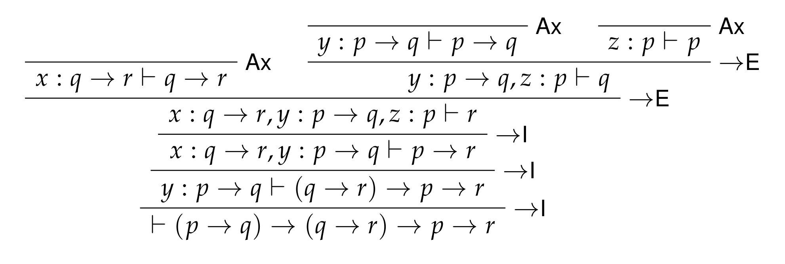

Introducing Intuitionistic propositional logic
Table of Contents
1. Review
We started looking at the Intuitionistic variant of propositional logic today.
1.1. Propositional logic
We start with a set of atomic propositional formulae \(At\), as well as a set \(\mathcal{V}\) of names for propositional formulae, which we will use to keep track of assumptions in proofs. Using \(At\), we construct the set of propositional formulae \(Form\) as the smallest set \(S\), such that:
- \(At ⊆ S\)
- \(⊤, ⊥ ∈ S\)
- If \(φ, ψ ∈ S\), then \((φ ∧ ψ), (φ ∨ ψ), (φ → ψ) ∈ S\)
In general, when we construct proofs, they will be proofs of judgments of the following kind: \[Γ ⊢ φ\] where \(Γ\), called a context, is a set of named formulae (or equivalently, a partial function from \(\mathcal{V}\) to \(Form\)), and \(φ ∈ Form\). When we specify contexts, we will write out the named formulae, separated by commas; e.g., \(x : p, y : q, z : r\) is the context \(Γ\) such that \(Γ(x) = p\), \(Γ(y) = q\), and \(Γ(z) = r\).
Finally, let us introduce a couple of notational conventions. Just as we had applications in the λ-calculus associate to the left, we will allow implications in propositional logic to associate to the right. That is, when we have a formula \(φ → (ψ → χ)\), we leave off the parentheses, writing simply \(φ → ψ → χ\). In case we have \((φ → ψ) → χ\), we leave them on. In addition, we will abbreviate (for any \(φ\)) the formula \(φ → ⊥\) as \(¬φ\). Thus for example, \(¬¬φ\) is a shorthand for \((φ → ⊥) → ⊥\).
1.2. Intuitionistic rules
Except for \(\mathtt{Ax}\) and \(⊤\mathtt{I}\) (which don't require premises), each rule in our system will be of the form \[\frac{Γ₁ ⊢ φ₁\,\,\,...\,\,\,Γₙ ⊢ φₙ}{Γ₁, ..., Γₙ ⊢ ψ}\mathtt{Rule}\] meaning that the rule \(\mathtt{Rule}\) allows us to conclude \(ψ\), given premises \(φ₁, ..., φₙ\), by combining the contexts in which the premises appear. In general, when we combine contexts, we assume that any names they might have in common are assigned to the same propositional formulae; otherwise, we have to perform a renaming in their combination. That is, if \(Γᵢ(x) = φ\) and \(Γⱼ(x) = ψ\), either \(φ = ψ\), or \(Γᵢ, Γⱼ\) is to be understood as involving a substitution of some fresh name for \(x\) in either \(Γᵢ\) or \(Γⱼ\) (as well as in the premises which preceded it).
Each connective has either introduction rules, elimination rules, or both.
- Rule for introducing assumptions: \[\frac{}{Γ, x : φ ⊢ φ}\mathtt{Ax}\]
- Rules for \(∧\): \[\frac{Γ ⊢ φ\,\,\,\,\,\,Δ ⊢ ψ}{Γ, Δ ⊢ (φ ∧ ψ)}∧\mathtt{I}\,\,\,\,\,\, \frac{Γ ⊢ (φ ∧ ψ)}{Γ ⊢ φ}∧\mathtt{E}_L\,\,\,\,\,\, \frac{Γ ⊢ (φ ∧ ψ)}{Γ ⊢ ψ}∧\mathtt{E}_R\]
- Rules for \(∨\): \[\frac{Γ ⊢ φ}{Γ ⊢ (φ ∨ ψ)}∨\mathtt{I}_L\,\,\,\,\,\, \frac{Γ ⊢ ψ}{Γ ⊢ (φ ∨ ψ)}∨\mathtt{I}_R\,\,\,\,\,\,\, \frac{Γ ⊢ (φ ∨ ψ)\,\,\,\,\,\,Δ, x : φ ⊢ χ\,\,\,\,\,\,Σ, y : ψ ⊢ χ}{Γ, Δ, Σ ⊢ χ}∨\mathtt{E}\]
- Rules for \(→\): \[\frac{Γ, x : φ ⊢ ψ}{Γ ⊢ (φ → ψ)}→\mathtt{I}\,\,\,\,\,\, \frac{Γ ⊢ (φ → ψ), Δ ⊢ φ}{Γ, Δ ⊢ ψ}→\mathtt{E}\]
- Rule for \(⊤\): \[\frac{}{Γ ⊢ ⊤}⊤\mathtt{I}\]
- Rule for \(⊥\): \[\frac{Γ ⊢ ⊥}{Γ ⊢ φ}⊥\mathtt{E}\]
1.3. Examples
Goal: \((p → q) → (q → r) → p → r\). 
Goal: \(((p ∨ q) → r) → ((p → r) ∧ (q → r))\).
Goal: \((p ∨ ¬p) → ¬¬p → p\)

2. Exercises
2.1. Part 1
Prove any or all of the following! Practice makes perfect!
- \(p → (¬p ∨ q) → q\)
- \(p → ¬¬p\)
- \(¬p ∧ ¬q → ¬(p ∨ q)\)
- \(¬p ∨ ¬q → ¬(p ∧ q)\)
- \(¬¬(p ∨ ¬p)\)